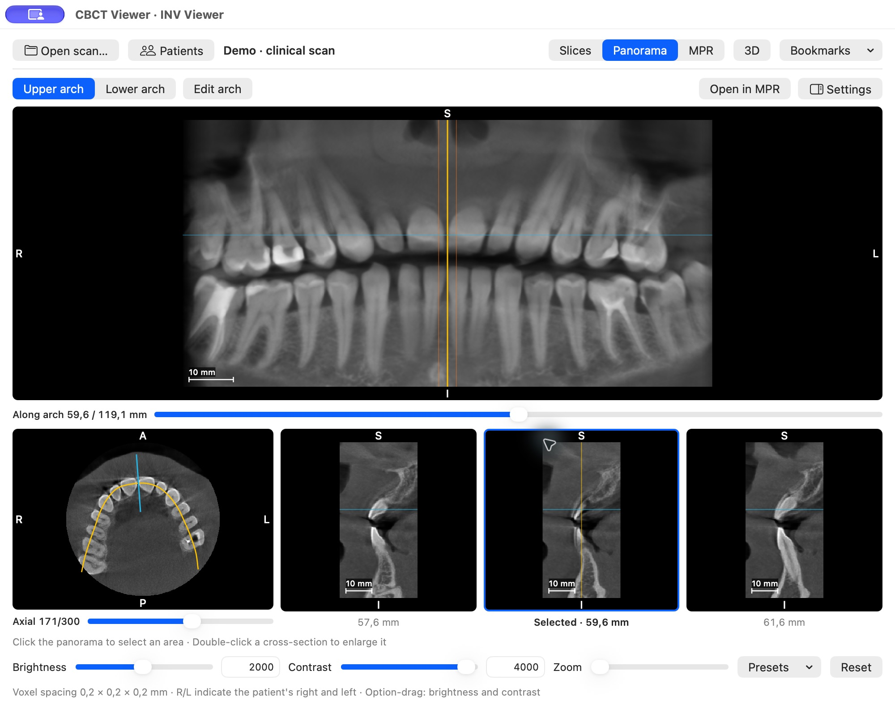

INV VIEWER 1.14.0 / MACOS
Dental CBCT viewer for Mac
Open supported INV and DICOM scans, browse the dental arch, and inspect the volume in 3D.
Version 1.14.0 · macOS 14+ · Build from source
Install and open the app
Requires macOS 14 or later. Follow the installation guide to install the build tools, download the source and open the included demo.
The release downloads also include an Apple Silicon developer build. It is ad-hoc signed and not notarized.
Panorama, cross-sections and 3D
A 24-second tour of the app. Edited for length; no audio. Download MP4
MODEL CONTEXT PROTOCOL
Control the viewer through MCP
Use an MCP client to select a slice, rotate the volume or move a clipping plane. The app returns the image and view settings.
Tool calls and the returned images. Edited for length. MP4 · Call transcript
Connect Codex and repeat these calls →
Screenshots

Open the demo study
Choose Open demo in the app, or download the study below.
Download demo .inv · 35 MBThe bundled study and its images are used with the subject’s permission. Separate media terms apply. Open the study in the Mac app to browse its slices.